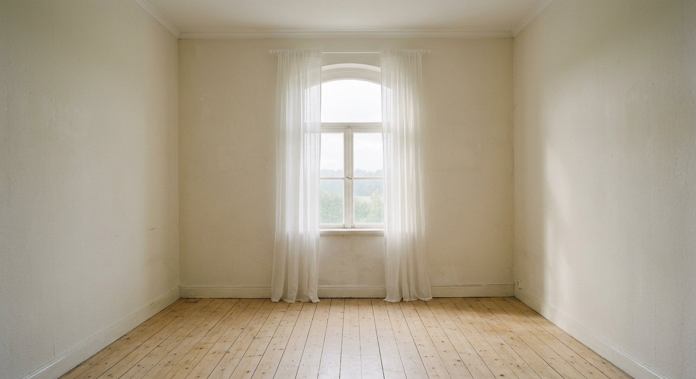
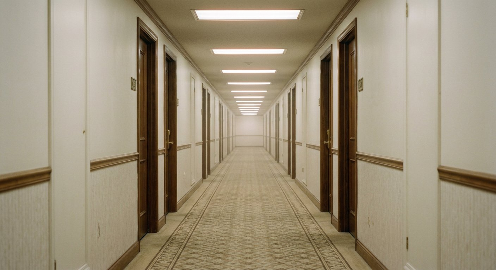

o quarto ao lado
Continue de onde parou
Você ainda não começou a travessia. A porta do Salmo 1 está aberta.

sala de espera da alma · est. no silêncio
Os 150 Salmos, inteiros, num espaço liminar: sem pressa, sem barulho. Leia, grife com marca-texto, marque como lido e escreva o que Deus falou com você.
23°32′S · 46°38′W — luz fluorescente, coração aceso

o quarto ao lado
Você ainda não começou a travessia. A porta do Salmo 1 está aberta.
como você está hoje?
Cada categoria é uma salinha com os Salmos que falam àquela estação do coração — com versículos-âncora para respirar fundo.
os mais visitados
Os Salmos mais famosos trazem um textinho curto — “em palavras simples” — para entender sem complicar. Toque para ler.
como funciona este lugar
Dentro de cada Salmo, escolha uma cor — azul lilás verde amarelo — e toque num versículo para pintar. Toque de novo para apagar.
O botão “Marcar como lido” registra sua travessia. A barra no topo mostra quantos dos 150 Salmos você já atravessou.
Ao fim de cada Salmo há um caderno em branco: o que Deus falou comigo hoje? Tudo fica salvo no seu navegador e reunido no .
o livro inteiro · 150 salmos · 2.461 versículos
Texto integral de Salmos (Almeida Revista e Corrigida). Busque por número, palavra ou sentimento.
Nenhuma porta por aqui… tente outra palavra ou limpe os filtros. 🌫️
versículos por sentimento
Não sabe por onde começar? Diga como está o coração — cada sala traz versículos-âncora e os Salmos que moram nela.
seu caderno neste lugar
Suas reflexões, seus grifos coloridos e sua travessia pelos 150 Salmos — tudo salvo só neste navegador, sem conta e sem nuvem.